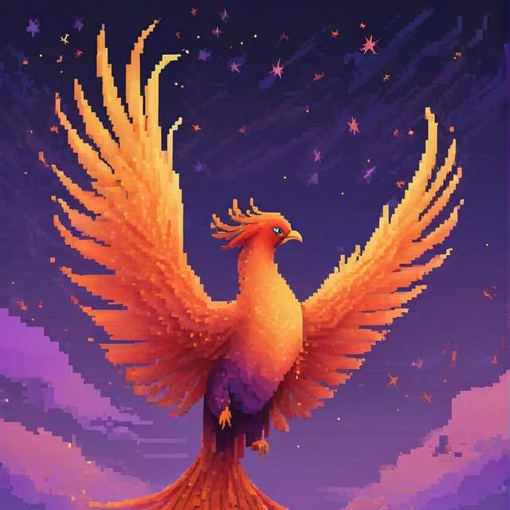

Возможность быстро войти в data since, освоить базы струнктурирования SQL запростов, выучить БАЗУ! Простой и удобный синтаксис, лёгкий и понятный алгоритм, возможность внедрения команд в код!
Acsolotl
Иновация в мире баз данных! Опробуйте новую разработку INPH прямо сейчас. Начните свой путь в мире data sience!
Acsolotl
Программа-среда программирования для работы с базами данных на SQLite3. Простой синтаксис, лёгкий сопосб усвоения и множество встроенных функций, способных помочь и упростить работу в data since.
INPH
Invincible Phoenix studio - это команда разработчиков со всей России, развивающейся в сфере IT. Мы создаём не только игры
Acsolotl
имеет простой пользовательский интерфейс с понятным языком и возможностью просмотра команд в виде SQLite запросов.
Документация
имеет простое объяснение всех команд с наглядными примерами применения их на практике и объяснением большей части функций приложения.
Скачать
и протестировать приложение - это возможность поучаствовать в разработке и помочь нам в дальнейшем развитии проекта.

Invincible Phoenix Studio
Компания Invincible Phoenix Studio была основана 24 октября 2021 года юным программистом под псевдонимом Mr_next. На протяжении двух лет команда собиралась. За это время: 25 октября 2021 присоеденяется artmanei, 24 октября 2022 года присоеденяется monokuma, 7 января 2023 года присоединяется mr.tuqym, 20 авгуса 2023 года присоеденяется ZANE, 28 августа 2023 года присоеденяется Ghost_Qushi, 7 сентября 2023 года присоеденяется FoxyProgram, 10 октября 2023 года присоеденяется Mikegood. На данный момент иерархия в студии построена следующим образом: Глава - Mr_next; заместители главы - FoxyProgram, MikeGood; Разработчики - Mr_next, FoxyProgram, ZANE; Художники - mr_tuqym, Ghost_Quishi, artmanei. Кждый из членов команды занимается своим направлением и старается выкладываться на полную.